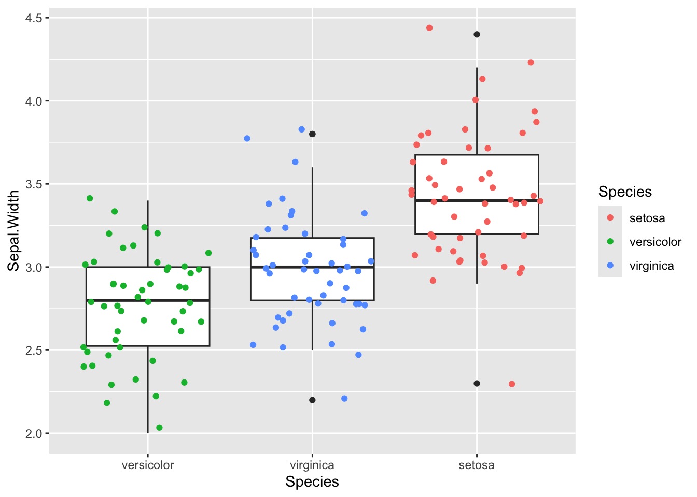
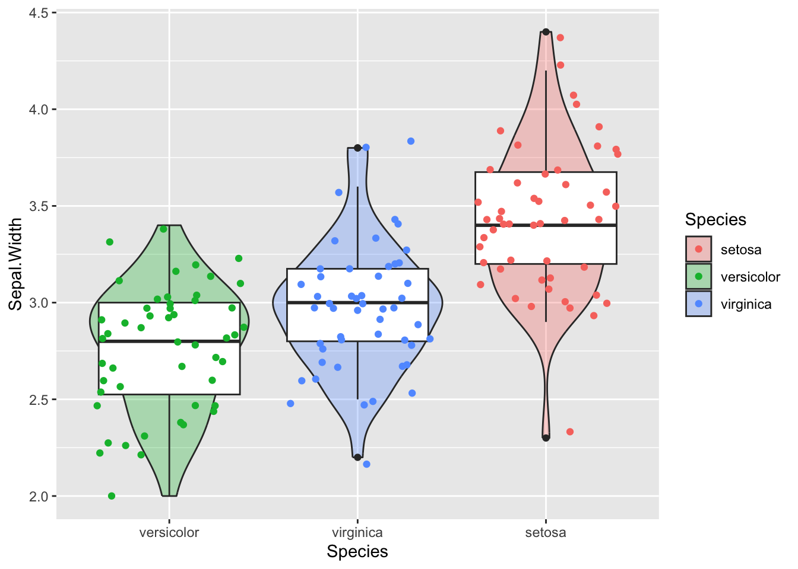
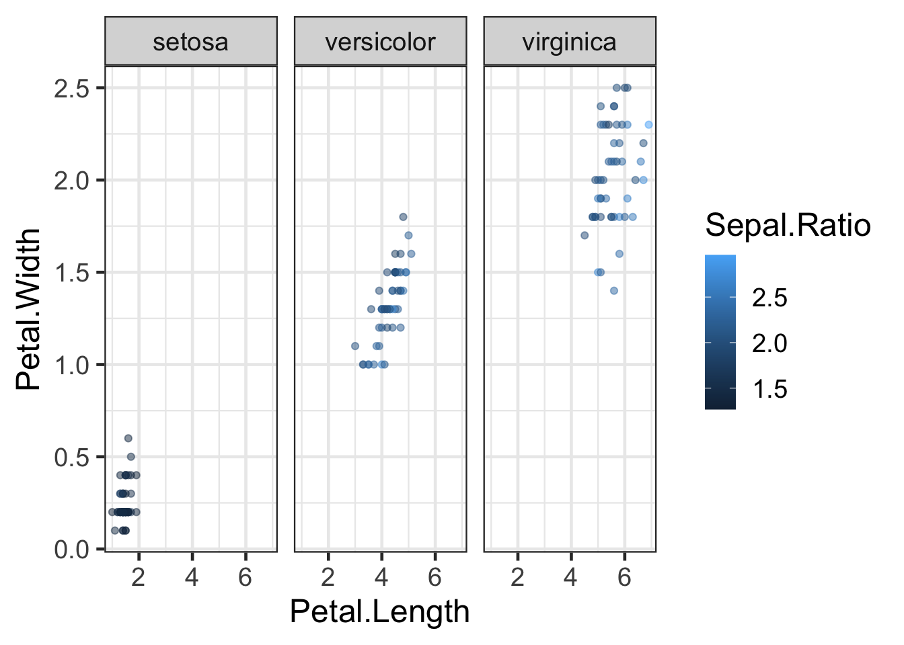
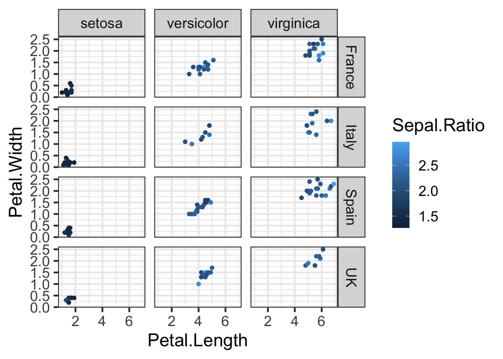

library(tidyverse)
library(ggthemes)
library(plotly)
library(ggrepel)
library(ggpubr)
library(viridis)
library(RColorBrewer)
library(ggsci)
library(patchwork)
library(gghighlight)
#This dataset is built in to R
data(iris)
#Import from url
surveys <- read_csv("http://bifx-core3.bio.ed.ac.uk/training/R_dplyr_and_ggplot2/data/surveys_complete.csv") ggplot2
Learning Objectives
- Build graphics layer by layer with ggplot2
- Create different types of graphics by applying geometries
- Apply additional layers to a graphic
- Visually subset graphics by applying fills and gradients
- Change the appearance of graphics using themes
- Create sub-graphics by applying facets
- Create and save basic graphics
- Use additional libraries such as
plotlyto enhance the utility of graphics.
ggplot2 is a plotting package that makes it simple to create complex plots from data in a data frame. It provides a grammar for specifying which variables to plot, how they are displayed, and general visual properties. Therefore, we only need minimal changes to our code if the underlying data change or if we decide to switch from a bar plot to a scatterplot. This helps to create publication quality plots with minimal adjustments and tweaking.
First, make sure you load all of the required libraries and datasets. There are quite a few new libraries here and we will explain them as we go.
Fisher’s Iris dataset (pre-installed in R)

Fisher examined the length and width of the petals and sepals in irises to determine a classification algorithm. Here we will explore the relationship between species and the dimension of the flowers via the ggplot2 plotting package. Fisher’s data is stored as a built in data set in R. To see the data type:
head(iris) Sepal.Length Sepal.Width Petal.Length Petal.Width Species
1 5.1 3.5 1.4 0.2 setosa
2 4.9 3.0 1.4 0.2 setosa
3 4.7 3.2 1.3 0.2 setosa
4 4.6 3.1 1.5 0.2 setosa
5 5.0 3.6 1.4 0.2 setosa
6 5.4 3.9 1.7 0.4 setosaThis data frame has two types of data, continuous and discrete.
str(iris)'data.frame': 150 obs. of 5 variables:
$ Sepal.Length: num 5.1 4.9 4.7 4.6 5 5.4 4.6 5 4.4 4.9 ...
$ Sepal.Width : num 3.5 3 3.2 3.1 3.6 3.9 3.4 3.4 2.9 3.1 ...
$ Petal.Length: num 1.4 1.4 1.3 1.5 1.4 1.7 1.4 1.5 1.4 1.5 ...
$ Petal.Width : num 0.2 0.2 0.2 0.2 0.2 0.4 0.3 0.2 0.2 0.1 ...
$ Species : Factor w/ 3 levels "setosa","versicolor",..: 1 1 1 1 1 1 1 1 1 1 ...The continuous data is of type number and the discrete data is of type factor, which can be one of the 3 species:
levels(iris$Species)[1] "setosa" "versicolor" "virginica" The summary() function gives a summary of data in a column. For factors it will give us the count for each categorical variable.
summary(iris$Species) setosa versicolor virginica
50 50 50 We can also use run summary() on an entire dataframe or tibble. Take a look at the different column types.
summary(iris) Sepal.Length Sepal.Width Petal.Length Petal.Width
Min. :4.300 Min. :2.000 Min. :1.000 Min. :0.100
1st Qu.:5.100 1st Qu.:2.800 1st Qu.:1.600 1st Qu.:0.300
Median :5.800 Median :3.000 Median :4.350 Median :1.300
Mean :5.843 Mean :3.057 Mean :3.758 Mean :1.199
3rd Qu.:6.400 3rd Qu.:3.300 3rd Qu.:5.100 3rd Qu.:1.800
Max. :7.900 Max. :4.400 Max. :6.900 Max. :2.500
Species
setosa :50
versicolor:50
virginica :50
Building a ggplot
ggplot graphics are built step by step by adding new elements. Adding layers in this fashion allows for extensive flexibility and customization of plots. To build a ggplot, we use the following basic template:
ggplot(data = <DATA>, mapping = aes(<MAPPINGS>)) + <GEOM_FUNCTION>()Let’s explore the iris dataset with ggplot. Use the ggplot() function and bind the plot to a specific dataframe using the data argument.
ggplot(data = iris)
Define a mapping (using the aesthetic (aes) function), by selecting the variables to be plotted and specifying how to present them in the graph, e.g. as x/y positions or characteristics such as size, shape, color, etc.
ggplot(data = iris, mapping = aes(x = Sepal.Length, y = Sepal.Width))
To plot our data we need to add a geometry. Geoms are the graphical representations of the data in the plot (points, lines, bars). ggplot2 offers many different geoms, here are a few commonly used examples:
geom_point()for scatter plots, dot plots, etc.geom_histogram()for histogramsgeom_bar()orgeom_col()for bar plotsgeom_boxplot()for, well, boxplots!geom_line()for trend lines, time series, etc.
Scatterplots
To add a geom to the plot use the + operator. Let’s use geom_point() to plot two continuous variables first. The data and mapping are always the first two arguments to ggplot so we can leave these out if arguments are provided in this order:
ggplot(iris,aes(x = Sepal.Length, y = Sepal.Width)) +
geom_point()
The + in the ggplot2 package is particularly useful because it allows us to modify existing ggplot objects. This means we can easily set up plot templates and conveniently explore different types of plots, so the above plot can also be generated with code like this:
# Assign plot to a variable
p <- ggplot(data = iris, mapping = aes(x = Sepal.Length, y = Sepal.Width))
# Draw a scatter plot
p + geom_point()
Anything you put in the ggplot() function is inherited by the subsequent geom layers that you add. This includes the x- and y-axis mapping you set up in aes(). If you want to specify mappings for a given geom independently you can add these within a geom.
We can colour the points in the geometry.
p + geom_point(colour="red")
Not very informative though, let’s start again and colour the points by species. Note as well that the x and y labels are also not neccessary if the data is in the correct order.
p<-ggplot(iris, aes(Sepal.Length, Sepal.Width, colour=Species) ) + geom_point()
p
In the aes() function, colour is used for lines and points. If you want to colour shapes such as bars in barplots and histograms you need to use fill.
Each function within the ggplot package has its own help file associated with it.
?geom_point()Note that all the geometries also define a statistical transformation. In the help file of geom_point you’ll see that stat = "identity" which is just the value that is presented. Other geometries have different defaults, for instance geom_histogram bins values together.
Histograms
Here is an example of the histogram geometry:
#Create a new version of the iris dataset with a new column
iris2 <- iris |> mutate(Sepal.Ratio=Sepal.Length/Sepal.Width)
#Visualise the distribution of Sepal.Ratio with a histogram
h<- ggplot(iris2, aes(Sepal.Ratio, fill=Species )) +
geom_histogram(binwidth=0.1)
hDiscussion
Try altering the binwidth parameter to see how this affects the plot.
Challenge:
Use what you have learned to create a scatterplot of Sepal.Width over Species.
Solution.
Solution:
ggplot(iris, aes(x=Species, y=Sepal.Width )) + geom_point() Boxplots
Boxplots are an effective way to visualise distributions of data within groups. The boxplot geometry needs the x value to be a categorical variable.
b <- ggplot(iris, aes(x=Species, y=Sepal.Width )) + geom_boxplot()
b
To change the axes we can use another function called coord_flip()
b + coord_flip()We can reorder the Species by the median Sepal.Width for display purposes. The forcats package in the tidyverse has lots of functions for ordering, labelling and manipulating factors (discrete / categorical variables).
b <- ggplot(iris, aes(x=fct_reorder(Species,Sepal.Width), y=Sepal.Width )) +
geom_boxplot()
b
We probably want to relabel the x-axis now:
b <- b + xlab("Species")
bAdding layers
By adding points to a boxplot, we can have a better idea of the number of measurements and of their distribution.
b + geom_point(colour="forest green")
This is okay, but there are some blurry dots where values overlap and it’s difficult to see how many data points we really have. We can use the alpha option within our geometry to increase transparency.
b + geom_point(colour="forest green",alpha=0.3)This is slightly better, we can see that darker points have more overlap, but it isn’t great. geom_jitter is a good alternative to geom_point in this example as it shifts data points so that they don’t overlap. We will colour by Species so there is no confusion.
b + geom_jitter(aes(colour=Species))
Violin plots
Challenge:
Boxplots are useful summaries, but hide the shape of the distribution. For example, if the distribution is bimodal, we would not see it in a boxplot. An alternative to the boxplot is the violin plot, where the shape of the density of points is drawn.
Replace the box plot with a violin plot; see geom_violin().
Solution.
Solution:
ggplot(iris, aes(x=fct_reorder(Species,Sepal.Width), y=Sepal.Width, fill=Species )) +
geom_violin() +
xlab("Species") Can you add a boxplot and datapoints over the violin plot?
Solution.
Solution:
ggplot(iris, aes(x=fct_reorder(Species,Sepal.Width), y=Sepal.Width)) +
geom_violin(aes(fill=Species),alpha=0.3)+
geom_boxplot()+
geom_jitter(aes(colour=Species))+
xlab("Species") 
Themes
Recap:
p<-ggplot(iris, aes(x=Sepal.Length, y=Sepal.Width, colour=Species)) + geom_point()We can continue to modify this scatter plot. Let’s make the axis a bit prettier with the xlab() and ylab() functions:
p <- p + xlab("Sepal length") + ylab("Sepal width")
pAll the characteristics of the plot, such as text size and the background are managed by the function called theme(). To see what a theme can change:
?themeYou can use a theme with predefined defaults e.g:
p + theme_dark() #Dark theme
#OR
p + theme_bw() #Black and white themeYou can also try theme_light, theme_minimal, theme_void, or create you own from scratch:
p + theme(
panel.background = element_blank(),
panel.grid.major = element_line(colour = "darkgrey"),
text = element_text(size=20),
axis.title.x=element_blank(),
axis.title.y=element_blank()
)# Note you can save your theme and reuse it
theme_for_nature <- theme(
panel.background = element_blank(),
panel.grid.major = element_line(colour = "darkgrey"),
text = element_text(size=20),
axis.title.x=element_blank(),
axis.title.y=element_blank()
)We can then reuse a theme, for example on the histogram we made earlier.
h + theme_for_natureR-studio will offer help finding themes after typing “theme_”. Give some of them a try. The ggthemes and ggpubr packages also contain a selection of prebuilt themes e.g:
library(ggthemes)
p + theme_fivethirtyeight()We can set a default theme to use in all ggplots:
theme_set(theme_bw())Adding colours to plots
As we have seen, points, lines and shapes can be coloured by a value in your dataframe using the aes() function. Earlier we coloured by a factor but we can also colour by a continuous value which will create a gradient of colour. Lets look at the Petals this time and colour by the ratio of Sepal.Length to Sepal.Width:
q <- ggplot(iris2, aes(x=Petal.Length, y=Petal.Width, colour=Sepal.Ratio)) +
geom_point(alpha=0.5)
q
To change the colours we need to use the scale_color_* functions of which there are many. Some are built into ggplot2 and others exist in external packages such as viridis or ggthemes. The viridis and ColorBrewer palettes are particularly useful and worth investigating. The ggsci package contains palletes based on key scientific journals.
Continuous scales
Try the different scale options in the code below:
library(viridis)
library(RColorBrewer)
#default
q + scale_colour_continuous()
#ColorBrewer palletes (many to choose from)
q + scale_colour_distiller(palette = "Spectral")#Viridis colour scales (many to choose from)
q + scale_colour_viridis()An alternative method is to use the scale_colour_gradient* functions to define your own gradient e.g:
q + scale_color_gradient2(high="darkred", low="white", mid="red", midpoint=2)Discrete scales
There are also colour scales for discrete variables. Note that we must use fill for colouring boxes.
bp<- ggplot(iris2,aes(Species,Sepal.Length,fill=Species)) +
geom_boxplot()
#Default
bp + scale_fill_discrete()#Viridis
bp + scale_fill_viridis(discrete = TRUE)#ColorBrewer Palettes
bp + scale_fill_brewer(palette = "Dark2")#GGSci - Nature publishing group
library(ggsci)
bp + scale_fill_npg()
Alternatively you can manually choose your own colours:
h + scale_fill_manual(values = c("forest green","dodger blue", "firebrick"))
Further Learning
The options for colouring graphs are huge.
- Color brewer 2 is a great site for getting the hex values of colours to suit needs such as printer or colour blind friendliness.
- Coolors and Colormind are colour palette generators.
Adding more variables
Take a look at this example:
ggplot(iris2, aes(x=Petal.Length, y=Petal.Width, colour=Sepal.Ratio)) +
geom_point()Challenge:
See if you can represent some of the other variables from the iris dataset in this plot as well. Hint: There are several other aesthetic mappings such as size and shape.
Solution.
Solution:
ggplot(iris2, aes(x=Petal.Length, y=Petal.Width, colour=Sepal.Ratio, shape=Species,size=Sepal.Length)) +
geom_point(alpha=0.5)
Faceting
When we have defined groups within a dataset, we can split our data into separate plots by using facets.
Let’s look at plot q again
qLet’s split this plot by species. This is achieved using either the facet_grid() or facet_wrap() functions:
q + facet_wrap(~Species,nrow = 1,scales = "fixed")Note that the facet variable is preceded by the ~ character. This is used to define formulas in R. Try playing around with the nrow and scales parameters in facet_wrap().
The facet_grid() function is useful when you are splitting by multiple factors. For instance, let’s add a country column to iris2 by randomly assigning one of four nations of origin to each observation:
countries <- c("Italy", "Spain", "France", "UK")
#Sample will randomly select a value for each row
iris2 <- iris2 |> mutate(Country=sample(countries,nrow(iris2),replace=TRUE))
q2 <- ggplot(iris2, aes(x = Petal.Length, y = Petal.Width, colour = Sepal.Ratio)) +
geom_point()
q2 + facet_grid(Country ~ Species)
Challenge:
Use dplyr and ggplot to display the mean petal length for each species in each country except for those found in France. Use colouring and faceting to enhance the plot.
Solution.
Solution:
iris2 |>
filter(Country != "France") |>
group_by(Species,Country) |>
summarise(Mean=mean(Petal.Length)) |>
ggplot(aes(x=Country, y=Mean, colour=Species)) + geom_point(size=4) + facet_wrap(~Species) + labs(title="Mean Petal Length")
Adding labels
You can add labels to points in your graphs. One of the best ways to do this is to use the package ggrepel.
library(ggrepel)
# you can use geom_text_repel() or geom_label_repel() to label whatever you want with non-overlapping labels. In the brackets use conditional subsetting to only label the interesting elements of your data.
ggplot(iris2,aes(Petal.Width,Petal.Length,colour=Sepal.Ratio)) +
geom_point() +
geom_label_repel(aes(label=ifelse(Petal.Length > 6.4 ,as.character(Species),'')))Highlight points or lines
You can choose to highlight specific points or lines using gghighlight:
library(gghighlight)
ggplot(iris2,aes(Petal.Width,Petal.Length,colour=Sepal.Ratio)) +
geom_point() +
gghighlight(Petal.Length > 6.4,label_key = Species)Saving plots
In RStudio there are many options to save the image. However, if you are are wanting to use ggplot2 in a script, or via web interfaces, you can export a graph using the function ggsave().
#save a png file
ggsave("IrisScatterplot.png", p)
#save a pdf file
ggsave("IrisScatterplot.pdf", p)The image format is automatically assigned from the file extension you use in the filename. Within ggsave() you can also set the resolution for the image as well as the length and width for the image. See the help page for ggsave for more options.
Arranging multiple plots
Placing ggplots side by side can be performed with packages like gridExtra and patchwork. Patchwork uses simple formulas to arrange ggplots:
library(patchwork)
#On top
q/bp
#Side by side
q+bp#2 plots on top, 1 on bottom
(q+h)/bp#Collect the guides together on one side
(q+h)/bp + plot_layout(guides = "collect")Use ggsave to save the image:
ggsave("DoublePlot.png",q/bp)Additional functions to try
Cut functions
The cut_* functions in ggplot2 can turn continous data into discrete levels. In this example we create a new column that puts the data into 5 groups of equal size based on Sepal.Length:
iris2 <- iris2 |> mutate(Sepal.Length.Group=cut_number(Sepal.Length,5))
ggplot(iris2,aes(Sepal.Length,Sepal.Width,fill = Sepal.Length.Group)) +
geom_violin() +
labs(fill="Sepal length intervals", x="Sepal length",y="Sepal width")
Note the use of the labs() function to change multiple labels at once.
Have a look at the difference between the cut_number, cut_interval and cut_width functions.
Scaling data
Let’s look at a larger dataset like the surveys_complete data we used earlier:
ggplot(surveys,aes(weight,hindfoot_length))+geom_point()
For axes with large values or very dispersed values it can be useful to rescale using a log axis. This can be done in two ways:
#We can transform the values in our ggplot call:
ggplot(surveys,aes(log10(weight),hindfoot_length))+geom_point()#OR we can change the axis to a log scale
ggplot(surveys,aes(weight,hindfoot_length))+geom_point() +
scale_x_log10()Discussion
What is the difference between these three plots?
Interactive graphs with Plotly and ggiraph
Plotly for ggplot2 is a browser-based charting library that converts ggplots into interactive visualisations:
library(plotly)
p2<-ggplot(iris2,aes(x = Sepal.Length, y = Sepal.Width, colour = Species)) + geom_point()
gp2<-ggplotly(p2)By default the mouse over text is what is mapped in the aesthetics. You can add a text aesthetic to add this to the tooltip text.
p2 <- p2+ geom_point(aes(text = Country))
gp2<-ggplotly(p2)Interactive plotly graphics open in the Viewer pane in Rstudio and can be embedded in R Markdown documents. Alternatively you can save them as individual web pages using the htmlwidgets package:
#View plotly
gp2You can save plotly objects as html web pages:
htmlwidgets::saveWidget(as_widget(gp2), "plotly_image.html")ggiraph is another package that allows you to create interactive graphics. It is particularly useful for creating interactive plots for the web.
Instead of geom_point() we use geom_point_interactive() from the ggiraph package. We then use the girafe() function to render the plot. The tooltip is set in the aesthetics.
library(ggiraph)
gg <- ggplot(iris2, aes(x = Sepal.Length, y = Sepal.Width, colour = Species, tooltip = Country)) +
geom_point_interactive()
girafe(ggobj = gg)Creating detailed graphics with ggpubr
The ggpubr package provides wrapper functions for ggplot that make it easier to generate complex, publication ready graphics. It includes functions for running statistical tests and displaying the results in the plot. After using ggpubr, you will need to reset your theme with theme_set().
# Violin plots with box plots inside
data("ToothGrowth")
df <- ToothGrowth
my_comparisons <- list( c("0.5", "1"), c("1", "2"), c("0.5", "2") )
ggviolin(df, x = "dose", y = "len", fill = "dose",
palette = c("#00AFBB", "#E7B800", "#FC4E07"),
add = "boxplot", add.params = list(fill = "white"))+
stat_compare_means(comparisons = my_comparisons, label = "p.signif")+ # Add significance levels
stat_compare_means(label.y = 50) # Add p-value The next example additionally uses the library cowplot to add density plots within the margins of the main figure. Don’t worry if you get lost here, this is just a demonstration of what’s possible in R and beyond the scope of this course.
library(cowplot)
# Main plot
pmain <- ggplot(iris, aes(x = Sepal.Length, y = Sepal.Width, color = Species))+
geom_point()+
ggpubr::color_palette("jco")
# Marginal densities along x axis
xdens <- axis_canvas(pmain, axis = "x")+
geom_density(data = iris, aes(x = Sepal.Length, fill = Species),
alpha = 0.7, linewidth = 0.2)+
ggpubr::fill_palette("jco")
# Marginal densities along y axis
# Need to set coord_flip = TRUE, if you plan to use coord_flip()
ydens <- axis_canvas(pmain, axis = "y", coord_flip = TRUE)+
geom_density(data = iris, aes(x = Sepal.Width, fill = Species),
alpha = 0.7, linewidth = 0.2)+
coord_flip()+
ggpubr::fill_palette("jco")
p1 <- insert_xaxis_grob(pmain, xdens, grid::unit(.2, "null"), position = "top")
p2<- insert_yaxis_grob(p1, ydens, grid::unit(.2, "null"), position = "right")
ggdraw(p2)
Final Challenge:
Spend the remaining time playing around with the different ggplot options and see if you can create an interesting and appealing visualisation with a dataset of your choice.
Use these resources for inspiration!
Key points
- ggplot2 builds graphics layer upon layer
- Bind a dataset to your ggplot function and map values to visual aesthetics
- Apply different geometries to create different graphics
- Use colours, fills, gradients, shapes etc. to represent multiple variables
- Use themes to alter the appearance of a graphic
- Generate sublots with facetting
- Save your graphics with
ggsave - There are many additional libraries that extend the functionality of ggplot